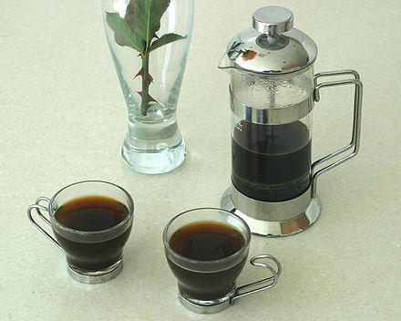
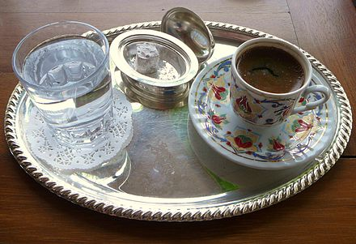

French Press
A French press, also known as a press pot, coffee press, or coffee plunger is a coffee brewing device patented by Italian designer Attilio Calimani in 1929.
Try our French Press »Mocha Latte

A caffe mocha is a variant of a caffè latte. Like a latte, it is typically one third espresso and two thirds steamed milk, but a portion of chocolate is added, typically in the form of a chocolate syrup.
Try our Mocha Latte »Turkish Coffee
Beans for Turkish coffee are ground to a fine powder. Turkish coffee is prepared by immersing the coffee grounds in water and heating until it just boils.
Try our Turkish Coffee »